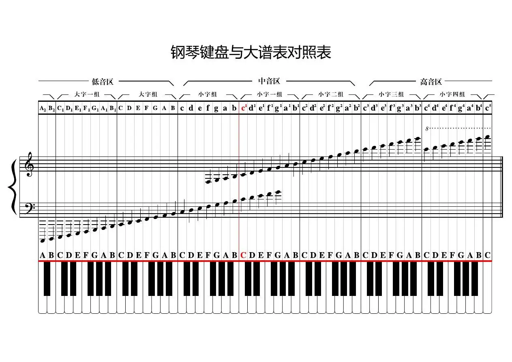

本部分是对五线谱的初步认识。五线谱，是世界上通用的一种记谱法，通过在五根等距离的平行横线上标以不同时值的音符及其他记号来记载音乐，属于运用最广泛的乐谱之一。 五线谱，顾名思义是由五条线组成的。的确，是由五条平行的“横线”和四条平行的“间”组成的，它们的顺序是由下往上数的，如图所示：
书写音符时，五条线并不足以容纳所有音符，因此，五线谱上方和下方还有隐形的线，称为“下加一线”“下加二线”...“上加一线”“上加二线”等。上方和下方加线一般不能超过五根。
符头的位置与所表达的音名关系如图所示：

其中，值得注意的是中央C在高音谱表和低音谱表（见谱号谱表）上的位置，分别在高音谱表的下加一线和低音谱表的上加一线上。